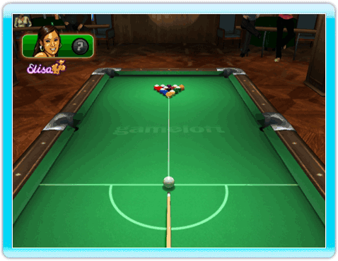

23 |
Règles du billard américain |
 |
L’un des joueurs doit rentrer les billes numérotées de 1 à 7 (pleines) tandis que l’autre doit rentrer les billes allant de 9 à 15 (rayées). Le joueur qui rentre ses billes en premier et qui rentre ensuite la noire en respectant les règles gagne la partie. Lag Pour déterminer qui va casser, chaque joueur tire la bille blanche vers la bande du haut de façon à ce qu'elle revienne vers la bande du bas. Le joueur le plus près de la bande du bas effectuera la casse. Casse Pour casser dans les règles, le joueur doit rentrer une bille ou envoyer au moins quatre billes numérotées contre les bandes. Si la casse n'est pas effectuée dans les règles, c'est une faute. Les billes sont remises en place et c'est à l'autre joueur de casser.Si un joueur rentre la blanche lors de la casse, c'est une faute. Toutes les billes rentrées le restent (sauf la noire). La table est considérée comme ouverte. Si la noire est rentrée lors de la casse, les billes sont remises en place et c'est à l'autre joueur de casser. Le joueur qui a rentré la noire ne perd pas la partie.  Table ouverte La table est considérée comme "ouverte" tant que le choix des groupes (pleines ou rayées) n'est pas fait. Tant que la table est ouverte, toucher une pleine pour rentrer une rayée est autorisé, et vice versa. Cependant, lorsque la table est ouverte et que la première bille touchée est la noire, c'est une faute.Le joueur doit toucher l'une des billes de son groupe en premier à tous les coups (excepté lors de la casse ou tant que la table est ouverte) puis soit rentrer une bille numérotée, soit faire toucher la bande à la blanche ou n'importe quelle bille numérotée. Bille en main Bille en main. Le joueur peut placer la blanche où il veut sur la table. |
 |
 |
 |